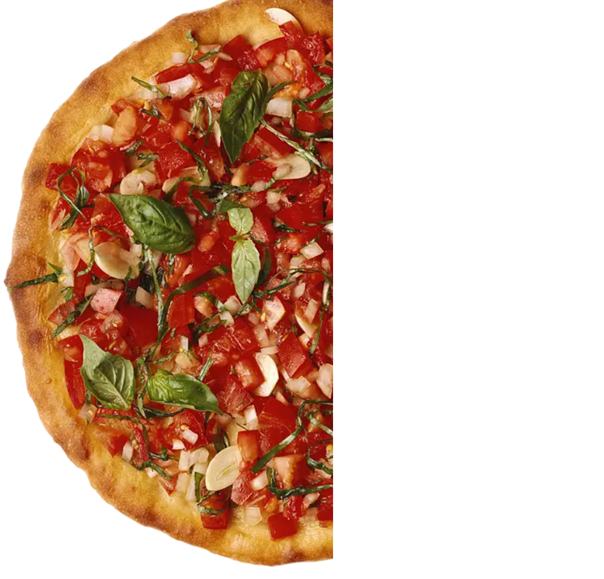

1427 Railroad Av.
Bellingham, WA
5P - 12A every day
To-Go & Delivery
Menu
About
Something
Look Inside
Here's where the menu lives.
Here's where the menu lives.
Note to chard. here's the next step: flesh out the other #sections here, then use javascript to toggle their display based on the menu-options links.
Here's the about section.
Here's the something section.
Here's the look inside section.